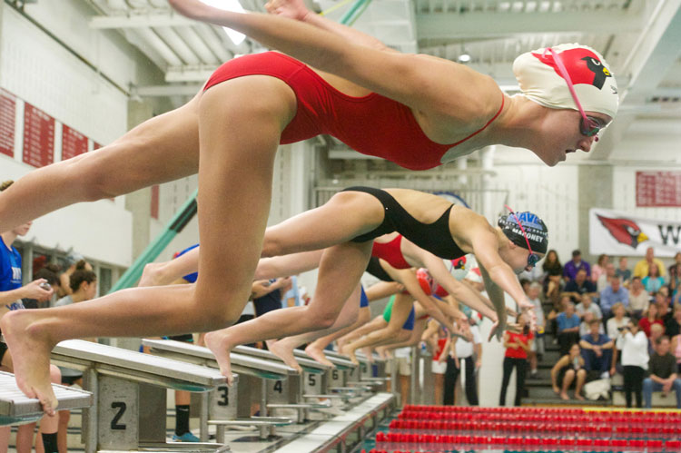

I started competitivly swimmng when I was eight years old I started swimming because my dad was a swimmer when he was younger, and I had a natural talent and passion. I was apart of the YMCA swim team in my town until 8th grade. Them, In high school I made varsity swimming for all four years.

I started doing crew when I was a freshman in high school. I made nationals for Greenwich Crew in 2018 which took place in California.